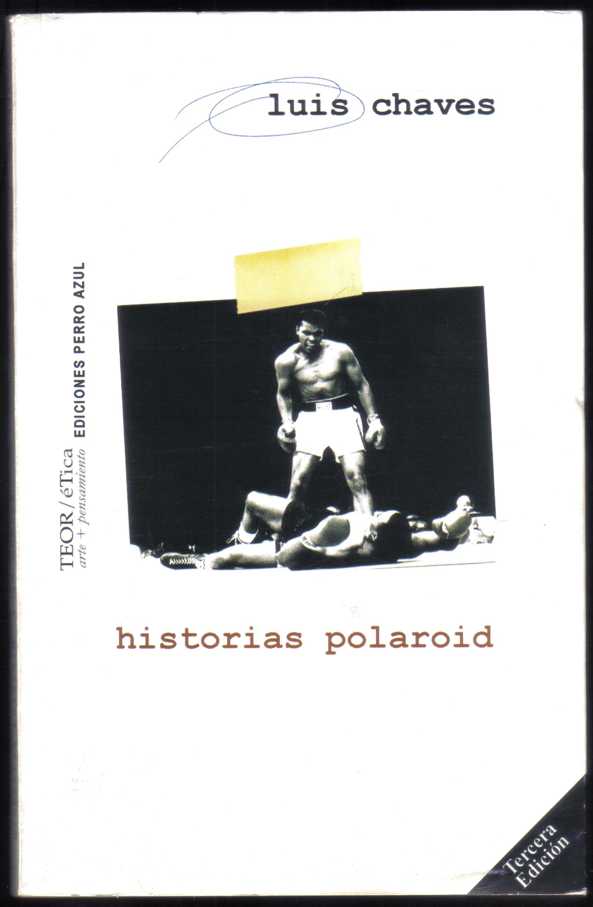

mein liebstes Bild (2015):
para orquesta y electrónica
estrenada por la Orquesta Filarmónica de Dresde en el Conservatorio superior de música Carl Maria von Weber, Dresde, 2015/5/18
---
El título de esta pieza es parte del último verso del poema Ringside, de Luis Chaves. El texto original en español se lee:
--
RINGSIDE
Fue la mejor pelea de Alí
o de Cassius Clay, como él lo llamaba,
negándose a aceptar
su recién adquirido nombre musulmán.
Ese negro levantaba los guantes
y convertía el cuadrilátero
en una pista de baile.
Años después comprendí
que ese fue mi encuentro inicial con la poesía.
Entre el quinto y sexto round
papá bajó su guardia por primera y última vez,
sin dejar de ver la tv dijo:
no me iba a casar con su mama
aunque usted ya había nacido,
estaba enamorado de otra.
En el álbum familiar
tengo un viejo fotoposter de Alí
justo cuando noqueaba a Foreman en Zaire.
Es mi foto preferida de mamá.
--
La traducción al alemán por Timo Berger a continuación:
--
AM RING
Es war der beste Kampf von Ali
oder Cassius Clay, wie er ihn weiter nannte
weil er sich weigerte
den neuen muslimischen Namen zu billigen.
Der Schwarze riss die Boxhandschuhe in die Höhe
und verwandelte das Viereck
in eine Tanzfläche.
Jahre später verstand ich:
Das war meine erste Begegnung mit der Dichtkunst.
Zwischen der fünften und der sechsten Runde
kam Papa zum ersten und letzten Mal aus der Deckung
ohne den Blick vom Fernseher abzuwenden, sagte er:
Obwohl du schon auf der Welt warst
wollte ich deine Mutter nicht heiraten
ich liebte eine andere.
Im Fotoalbum der Familie
bewahre ich ein altes Poster von Ali auf.
Auf dem Poster schlägt er Forman in Zaire k.o.
Es ist mein liebstes Bild von Mama.
--
La foto / Das Foto
Luis Chaves
Poetry (Spanish/German)
hochroth Verlag
Berlin 2012
ISBN 978-3-902871-05-3
--
Este poema, e Historias polaroid en su integridad, la colección en la que apareció el texto originalmente, han significado mucho para mí a lo largo de los años. En 2015 yo vivía en Alemania y leer la traducción al alemán me ayudó a reflexionar sobre casa, el idioma, la traducción y ciertas imposibilidades inherentes a estas cosas. mein liebstes Bild en cierta forma está relacionada con todo esto.

carátula de la edición de Historias polaroid que tengo en mi casa (Ediciones Perro Azul)